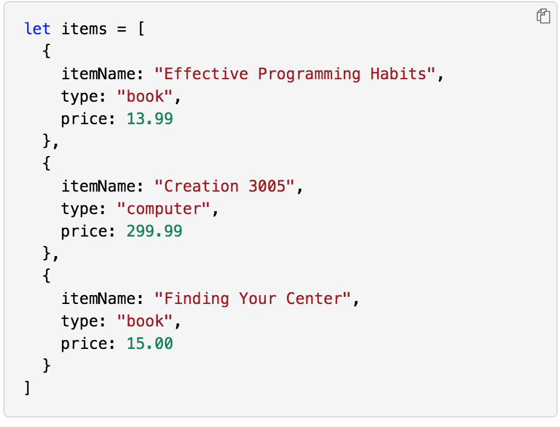

M. Sayer
Meet Muhajir
Software developer
- My name is Muhajir
- I am based out of D.C.
- I currently work on various web projects.
About Me
I work with
- Javascript
- HTML
- CSS
- Python
I have experience working with small businesses and working with teams to fulfill the web and app needs of e-commerce brands. I've also worked with social media marketing teams, creating ad campaigns and photo/video content.
I enjoy web development and marketing, and always look forward to working with brands and their teams to help come up with creative software solutions.
What started as a hobby has turned into a passion for programming that is both interesting and creative. I recently finished a coding bootcamp to expand my skillset, and am always looking for new ways to learn and grow.
Outside of building software I enjoy Brazilian Jiu-Jitsu, photography, chess, and copious amounts of ice cream. I love how all of these incororate into my work as a developer. Jiu-Jitsu teaches you how to work really well with others, chess really helps creative problem solving, and photography works wonders for aesthetics and design sense.
As for the ice cream...well everybody loves ice cream, so it's great for team building.
My Work
Shopping List Project
An example project I built using javascript to create some useful e-commerce functions for online businesses for cusomter ease of use. One adds the total price of all the items in a cart, another returns the most expensive item in the cart, and the last looks up the price of an item that the user searches for.
Technologies used: Javascript, HTML, CSS
Here's a code sample:
Shopping List ProjectExample Link: Live App
Example Link: GitHub Repo
My Services
- Website Creation
- Social Media Marketing
Contact
If you'd like to discuss working together, feel free to drop me an e-mail!
GitHub